Library for analog electrical models
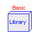
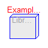
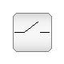
 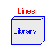
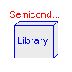
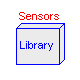
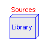
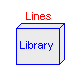
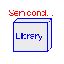
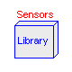
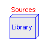
Information
This package contains packages for analog electrical components:
- Basic: basic components (resistor, capacitor, conductor, inductor, transformer, gyrator)
- Semiconductors: semiconductor devices (diode, bipolar and MOS transistors)
- Lines: transmission lines (lossy and lossless)
- Ideal: ideal elements (switches, diode, transformer, idle, short, ...)
- Sources: time-dependend and controlled voltage and current sources
- Sensors: sensors to measure potential, voltage, and current
-
Main Authors:
-
Christoph Clauß
<clauss@eas.iis.fhg.de>
André Schneider
<schneider@eas.iis.fhg.de>
Fraunhofer Institute for Integrated Circuits
Design Automation Department
Zeunerstraße 38
D-01069 Dresden
-
Version:
-
$Id$
-
Copyright:
-
Copyright © 1998-2002, Modelica Association and Fraunhofer-Gesellschaft.
The Modelica package is free software; it can be redistributed and/or modified
under the terms of the Modelica license, see the license conditions
and the accompanying disclaimer in the documentation of package
Modelica in file "Modelica/package.mo".
HTML-documentation generated by Dymola Wed Jun 30 17:49:02 2004
.